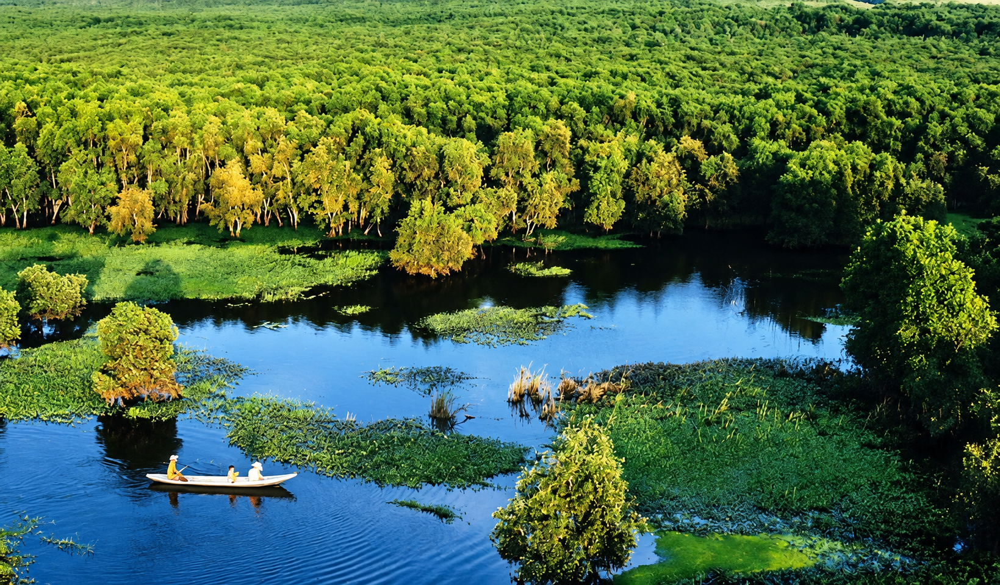

Mỗi hành trình, một câu chuyện.

Từ miền sông nước đến những hành trình văn hóa phương Nam.Cùng Tripmate khám phá cảnh sắc, văn hóa và hương vị Việt Nam.
Sẵn sàng đồng hành cùng bạn
Chuyến đi tiếp theo của bạn sẽ là đâu? 🌿Mình có thể gợi ý điểm đến, lịch trình và món ngon cho hành trình sắp tới.
✧ Bản trải nghiệm • Trả lời tự động theo kịch bản
Một vài thông tin để bắt đầu hành trình.
Gợi ý theo dữ liệu mẫu. Dự toán chưa gồm vé đi đến điểm đến; hãy kiểm tra giá và giờ mở cửa trước khi đặt dịch vụ.
Chọn điểm đến và những điều bạn yêu thích.TripMate sẽ sắp xếp một lịch trình để bạn tham khảo.
Lưu trên trình duyệt này, không đồng bộ giữa các thiết bị.